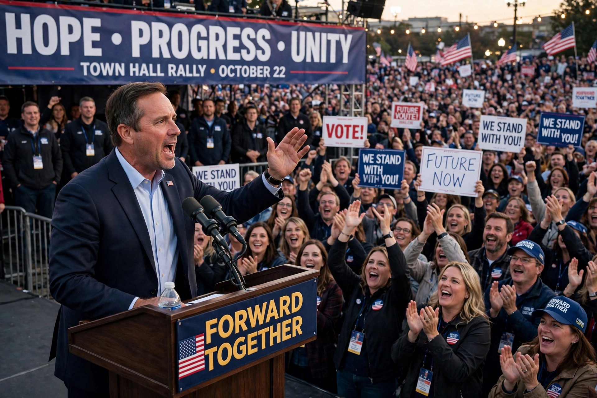

Election promise

An election promise or campaign promise is a promise or guarantee made to the public by a candidate or political party that is trying to win an election. Election promises may be central planks of a party platform or specific commitments made during the campaign, ranging from tax cuts and spending programmes to constitutional reforms.
Keeping and breaking promises
Comparative research on pledge fulfilment finds that parties in office act on most of their specific promises, with fulfilment rates generally higher for single-party governments than for coalitions, and for pledges on which the party has full jurisdiction. Nevertheless, broken promises are politically prominent: famous examples include "Read my lips: no new taxes", pledged by George H. W. Bush in 1988 and abandoned in the 1990 budget agreement, an episode often blamed for weakening his re-election campaign.
Reasons for non-fulfilment
Promises may be dropped because of changed economic circumstances, coalition bargaining, legislative opposition, court rulings, or events such as wars and crises. Political scientists distinguish these constraints from deliberate deception, while voters often punish perceived broken promises regardless of cause — one explanation for anti-incumbent sentiment.
"Core" and "non-core" promises
In Australia, Prime Minister John Howard's distinction between "core" and "non-core" promises after the 1996 election became a byword for political equivocation, and the phrase entered wider political vocabulary.
See also: Party platform, Demagogue, Populism.